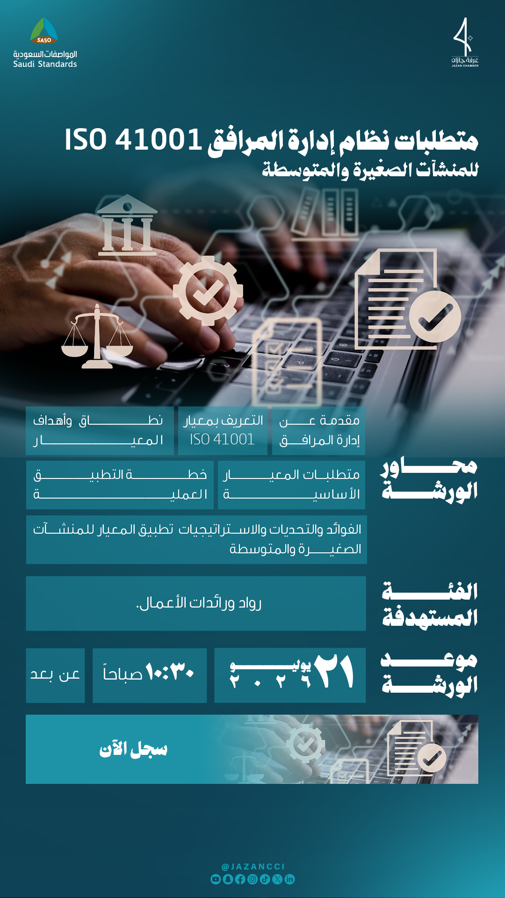
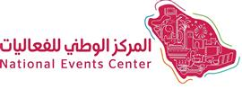
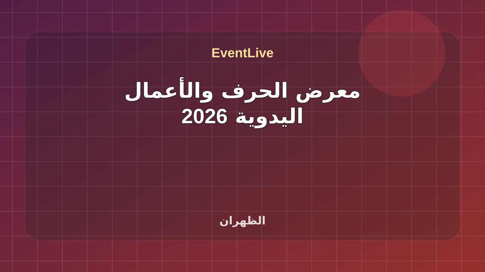
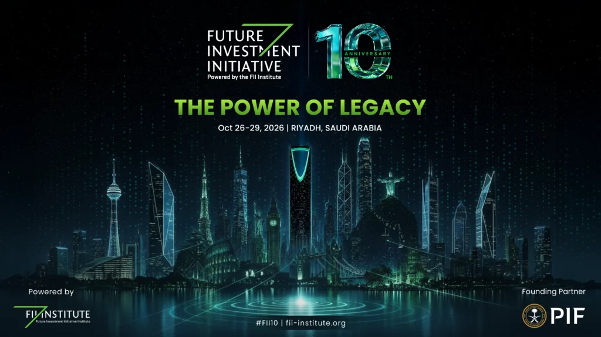
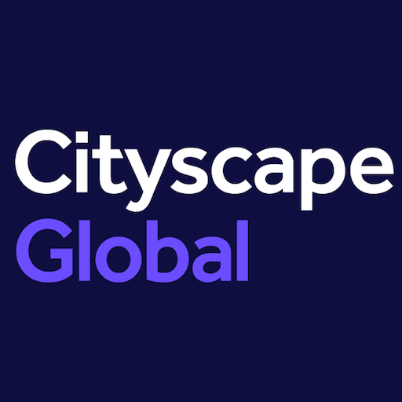
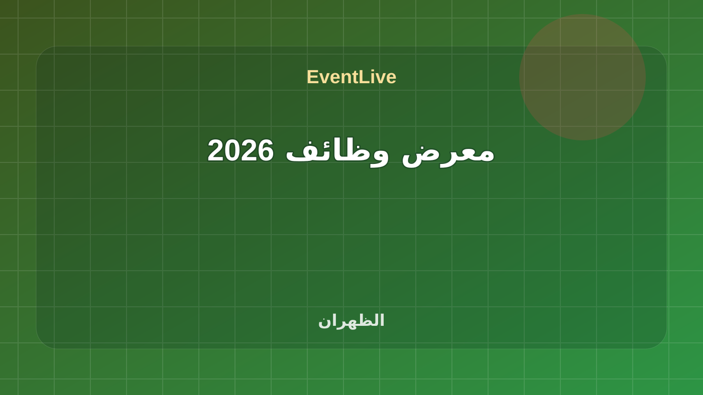
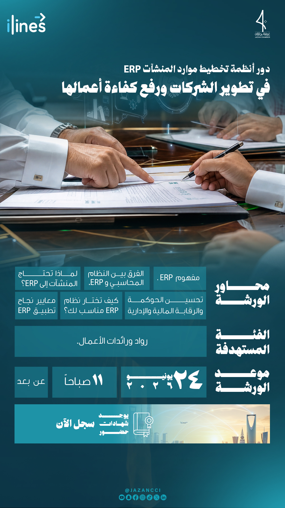
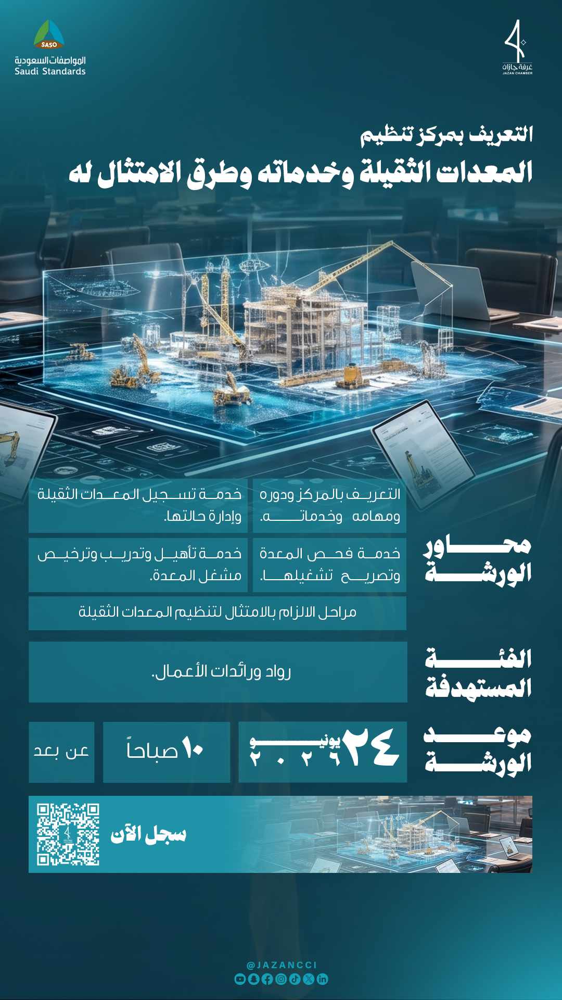
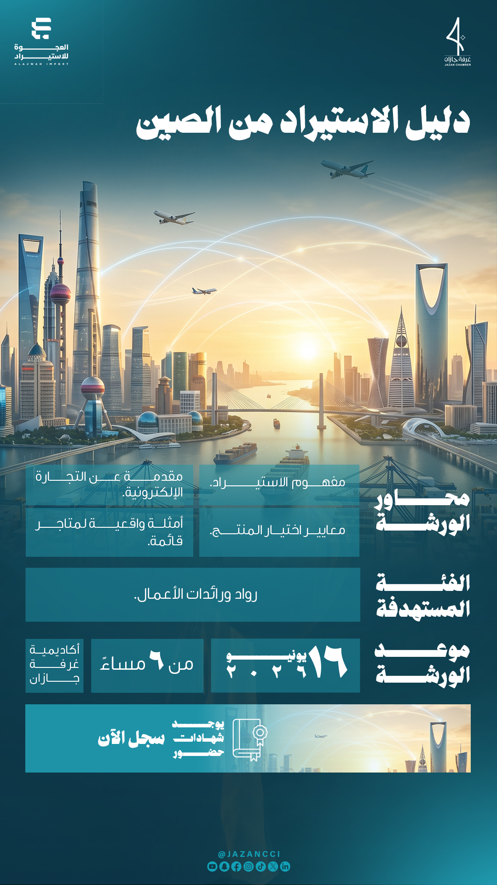
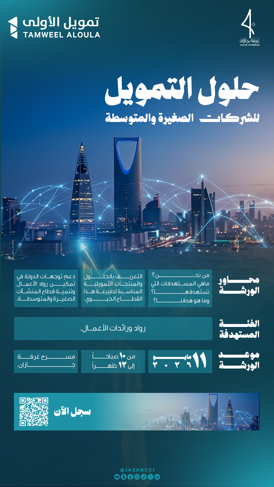

تابع فعاليات الغرف التجارية
هذه الروابط تتحدث مع كل بناء وتعرض الفعاليات القادمة والجارية لهذا السياق فقط.
فعاليات الغرف التجارية في السعودية مع وقت الفعالية ومكانها ومصدرها وحالة الجدول الحي.
هذه الروابط تتحدث مع كل بناء وتعرض الفعاليات القادمة والجارية لهذا السياق فقط.
متطلبات نظام إدارة المرافق ISO 41001 للمنشآت الصغيرة والمتوسطة محاور الورشة: - مقدمة عن إدارة المرافق. - التعريف بمعيار ISO 41001 . - نطاق وأهداف المعيار. - متطلبات المعيار الأساسية. - خطة التطبيق العملي. - الفوائد والتحديات والاستراتيجيات لتطبيق المعيار للمنشآت الصغيرة والمتوسطة. الفئة المستهدفة: رواد ورائدات الأعمال. موعد الورشة: 21 يونيو 2025م 10:30 صباحاً عن بُعد الجهات المنظمة المواصفات السعودية غرفة جازان

متطلبات نظام إدارة المرافق ISO 41001 للمنشآت الصغيرة والمتوسطة محاور الورشة: - مقدمة عن إدارة المرافق. - التعريف بمعيار ISO 41001 . - نطاق وأهداف المعيار. - متطلبات المعيار الأساسية. - خطة التطبيق العملي. - الفوائد والتحديات والاستراتيجيات لتطبيق المعيار للمنشآت الصغيرة والمتوسطة. الفئة المستهدفة: رواد ورائدات الأعمال. موعد الورشة: 21 يونيو 2025م 10:30 صباحاً عن بُعد الجهات المنظمة المواصفات السعودية غرفة جازان
تفاصيل الحضور
فعالية مدرجة في التقويم الرسمي لـ Dhahran Expo. الموعد: ١ سبتمبر ٢٠٢٦ في ٠٩:٠٠ ص إلى ٤ سبتمبر ٢٠٢٦ في ٠٦:٠٠ م. المنظم: Sharqia Chamber.
تفاصيل الحضور
فعالية رسمية من غرفة الشرقية. الموقع: شركة معارض الظهران الدولي. التاريخ المعلن: خلال الفترة مــــــــن (1-4 سبتمبر 2026م )في مقر شركة معارض الظهران الدولي وحيث تتطلع غرفة الشرقية لحضوركم ومشاركتكم فإننا نؤكد لكم تقديرنا الكبير لهذه المشاركة واعتزازنا .
تفاصيل الحضورفعالية مدرجة في التقويم الرسمي لـ Dhahran Expo. الموعد: ٢٧ سبتمبر ٢٠٢٦ في ٠٩:٠٠ ص إلى ٢٩ سبتمبر ٢٠٢٦ في ٠٦:٠٠ م. المنظم: Sharqia Chamber.
تفاصيل الحضور
The 10th Edition of the Future Investment Initiative (FII) convenes global leaders, investors, innovators, and policymakers to shape future economic growth, focusing on technology, capital markets, AI, sustainability, and global opportunity.
تفاصيل الحضور
Cityscape Global is the world’s largest real estate event, bringing together developers, investors, policymakers, and innovators to explore property trends, smart cities, PropTech, and major global projects.
تفاصيل الحضورفعالية مدرجة في التقويم الرسمي لـ Dhahran Expo. الموعد: ١ ديسمبر ٢٠٢٦ في ٠٩:٠٠ ص إلى ١ ديسمبر ٢٠٢٦ في ٠٦:٠٠ م. المنظم: Sharqia Chamber.
تفاصيل الحضور
فعالية رسمية من غرفة الشرقية. الموقع: شركة معارض الظهران الدولي. التاريخ المعلن: خلال الفترة مــــــــن (1-4 سبتمبر 2026م )في مقر شركة معارض الظهران الدولي وحيث تتطلع غرفة الشرقية لحضوركم ومشاركتكم فإننا نؤكد لكم تقديرنا الكبير لهذه المشاركة واعتزازنا .
تفاصيل الحضور
ورشة عمل من غرفة القصيم حول عمليات إدارة الموارد البشرية، موجهة للمهنيين ورواد الأعمال لتحسين إدارة الفرق والامتثال والإجراءات التشغيلية داخل المنشآت.
تفاصيل الحضور
دور أنظمة تخطيط موارد المنشآت ERP في تطوير الشركات ورفع كفاءة أعمالها محاور الورشة: - مفهوم ERP. - الفرق بين النظام المحاسبي و ERP. - لماذا تحتاج المنشآت إلى ERP؟ - تحسين الحوكمة والرقابة المالية والإدارية. - كيف تختار نظام ERP مناسب لك؟ - معايير نجاح تطبيق ERP. الفئة المستهدفة: رواد ورائدات الأعمال. موعد الورشة: 24 يونيو 2025م 11 صباحاً عن بُعد مميزات الورشة: شهادة حضور.
تفاصيل الحضور
التعريف بمركز تنظيم المعدات الثقيلة وخدماته وطرق الامتثال له محاور الورشة: - التعريف بمركز تنظيم المعدات الثقيلة. - خدماته. - طرق الامتثال له. الفئة المستهدفة: رواد ورائدات الأعمال. موعد الورشة: 24 يونيو 2025م 10 صباحاً عن بُعد
تفاصيل الحضور
أساسيات إدارة التأمين في المنشآت والشركات أساسيات إدارة التأمين في المنشآت والشركات ضمن فعاليات الغرف التجارية في بريدة. تبدأ الفعالية ٢٢/٠٦/٢٠٢٦، ٤:٣٠ م وتنتهي ٢٢/٠٦/٢٠٢٦، ٦:٣٠ م حسب البيانات المتاحة. تعرض الصفحة وقت الفعالية وموقعها ومصدرها وروابط التقويم والاتجاهات عند توفرها. المصدر: Qassim Chamber Events.
تفاصيل الحضورVivaTech (Viva Technology) is Europe’s leading innovation and technology event — a global gathering of startups, leaders, investors, and tech community members celebrating innovation and collaboration.
تفاصيل الحضور
دليل الاستيراد من الصين محـــــــــــاور الورشـــــــــة: - مفهــوم الاستيــــــــــــراد. - مقدمــــــة عـــن التجـــارة الإلكترونية. - معايير اختيار المنتـــج. - أمثلة واقعيـــــة لمتاجـــر قائمة. الفئـــــــــــــة المستهدفة: رواد ورائدات الأعمال.
تفاصيل الحضور
إدارة الأداء المؤسسي وتقييم الموظفين وفق مؤشرات KPI إدارة الأداء المؤسسي وتقييم الموظفين وفق مؤشرات KPI ضمن فعاليات الغرف التجارية في بريدة. تبدأ الفعالية ٠٨/٠٦/٢٠٢٦، ٤:٣٠ م وتنتهي ٠٨/٠٦/٢٠٢٦، ٦:٣٠ م حسب البيانات المتاحة. تعرض الصفحة وقت الفعالية وموقعها ومصدرها وروابط التقويم والاتجاهات عند توفرها. المصدر: Qassim Chamber Events.
تفاصيل الحضور
محاور الورشة - من نحن؟ - ماهي المستهدفات التي نستهدفها؟ - ماهو هدفنا؟ - التعريف بالحلول والمنتجات التمويلية المناسبة لطبيعة هذا القطاع الحيوي - دعم توجيهات الدولة في تمكين رواد الأعمال وتنمية قطاع المنشات الضغيرة والمتوسطة الفئة المستهدفة - رواد ورائدات الأعمال
تفاصيل الحضور
"* الجاهزية المؤسسية للنمو * بناء استراتيجية توسع مدروسة * قيادة التوسع نحو الاستدامة" التوسع الذكي: متى وكيف تكبر مشروعك؟ ضمن فعاليات الغرف التجارية في مكة. تبدأ الفعالية ٠١/٠٣/٢٠٢٦، ١١:٠٣ م وتنتهي ٠٢/٠٣/٢٠٢٦، ١٢:٠٣ ص حسب البيانات المتاحة. تعرض الصفحة وقت الفعالية وموقعها ومصدرها وروابط التقويم والاتجاهات عند توفرها. المصدر: Makkah Chamber Events.
تفاصيل الحضور
"* الذكاء العاطفي وابعاده الخمسة * الذكاء العاطفي في بيئة العمل وبناء علاقات مهنية قوية * الذكاء العاطفي في القيادة" الذكاء العاطفي وبناء علاقات قوية في عالم الأعمال ضمن فعاليات الغرف التجارية في مكة. تبدأ الفعالية ٠١/٠٣/٢٠٢٦، ١٠:٠٣ م وتنتهي ٠١/٠٣/٢٠٢٦، ١١:٠٣ م حسب البيانات المتاحة. تعرض الصفحة وقت الفعالية وموقعها ومصدرها وروابط التقويم والاتجاهات عند توفرها. المصدر: Makkah Chamber Events.
تفاصيل الحضور